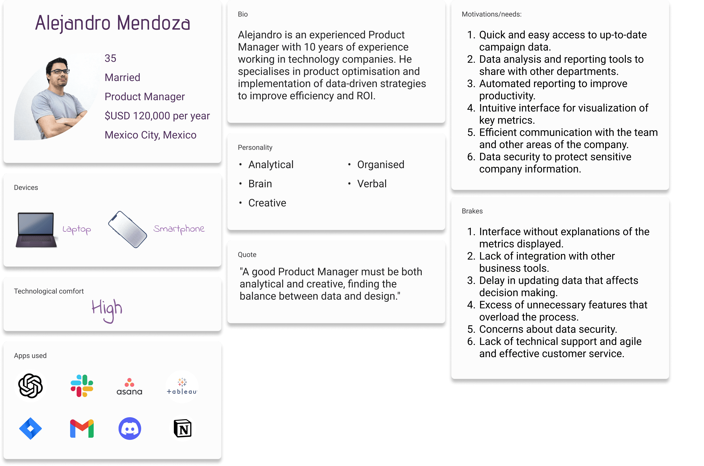

Intelligent assistance
Exploration of an innovative AI chatbot designed to enrich user interaction with data and metrics.
Exploration of an innovative AI chatbot designed to enrich user interaction with data and metrics.
This document provides an overview of our team's engagement and collaborative strategies in developing artificial intelligence solutions. Technical challenges, product definitions, and internal methodologies have been omitted or vaguely described to comply with agreed confidentiality restrictions. The included images have been carefully selected or edited to adhere to this non-disclosure agreement, ensuring that the project's essence and the integrity of the proprietary information remain protected.
In a context where immediacy of information is crucial, our team faced the need to bring users closer to an intuitive and enriched experience in understanding and manipulating business data and metrics.
Our goal was to integrate artificial intelligence solutions through deep learning language models (LLM) that would enable organic and efficient interactions, emulating a real human conversation and providing immediate and relevant responses.
As a Product Designer, I closely collaborated with Data Science specialists, Frontend and Backend Developers, a Quality Analyst (QA), and an Information Architecture Expert.
The journey involved
As a first step, I recognised the need to delve deeper into conversational design, a new field for me. To bridge this knowledge gap, I enrolled in and completed two specialised masterclasses offered by the Interaction Design Foundation.
Additionally, it was an excellent opportunity to put into practice what was learned in the Workshop "UX and Product Design for Artificial Intelligence and Machine Learning Solutions: Creating from Uncertainty"Workshop "UX and Product Design for Artificial Intelligence and Machine Learning Solutions: Creating from Uncertainty" that was given at ILA23 by Claudia Gutierrez.
We applied the "AI Project Canvas" to outline and communicate the project in a structured way, ensuring that each phase of development was aligned with our strategic objectives and user expectations.
It helped us to understand our target audience and to segment users with the stages of functionality.
You can find templates in Spanish created by Claudia Gutierrez here.
At this point given that the focus of the company is B2B, and that the product we offer is unique in many ways. Our market research focus was primarily on providing an experience in interacting with the chat and the safety of interacting with it.
Given that we are in a time where AI is embedded in our daily lives, we had the challenge of identifying the user's mental map of AI. Identify what the first launch should have as a minimum so as not to frustrate the user. We had to be extremely careful with the fact that we were working with sensitive data, we had to build trust in the user that their data was not shared and also identify the technology limitations and biases that might exist in the team.
For my part, I focused on identifying the key questions we needed to answer for this proposal:
For these answers I worked together with Customer Success, Marketing, Sales and Engineering to align the business objectives with the experience we wanted to provide to the user, so that it would be the same at any point of interaction with the company.
After several meetings with the Data & Engineering team, we defined 3 stages of evolution for the chat. I will focus on the first stage:
While I can't share the final design, I want to highlight an important trend in visual design that is observed in AI software releases, and that is the use of the following visual variants. This trend helps the user associate that these are AI tools.
One of the objectives for our platform is that through the design the user understands that it is not a simple chat bot, but making it clear that it was not a conversation with a human being so as not to generate frustration in case of not getting specific answers to their questions.
The challenge in the design was that this functionality has three stages, so the scalability of the design must be considered.
The project reflected a synergy between technological innovation and user-centred design, highlighting our team's ability to navigate through complex challenges and deliver a solution that not only meets, but anticipates and adapts to users' needs.
I would love to talk about the challenges, decisions and mistakes that were made during this first stage.
Feel free to talk to me on LinkedIn or by mail.
Abrazo Jo